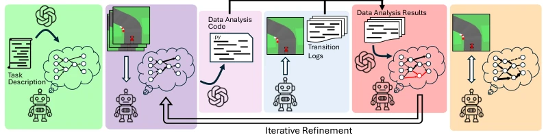
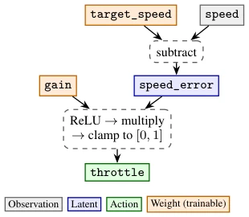
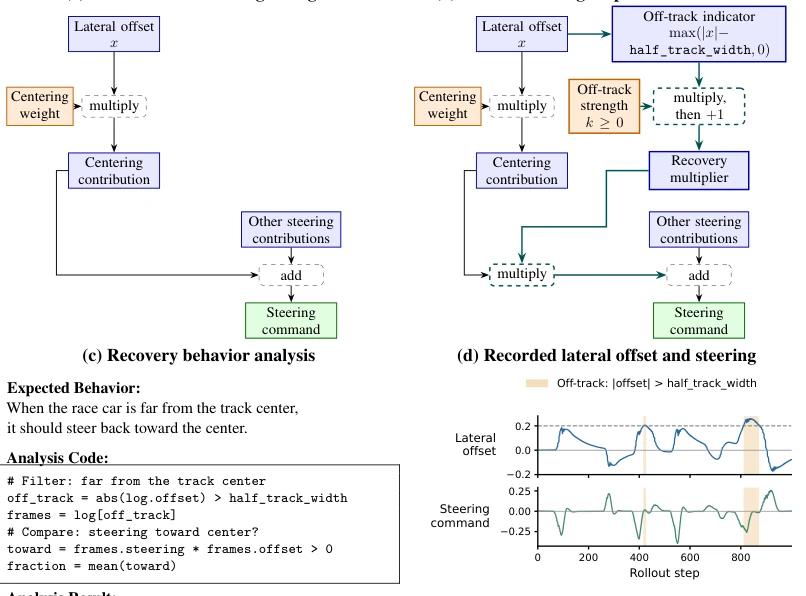
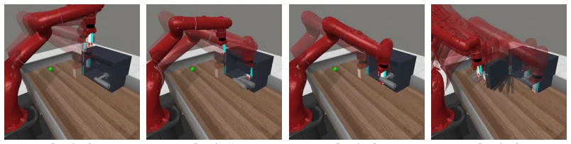
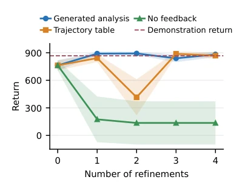
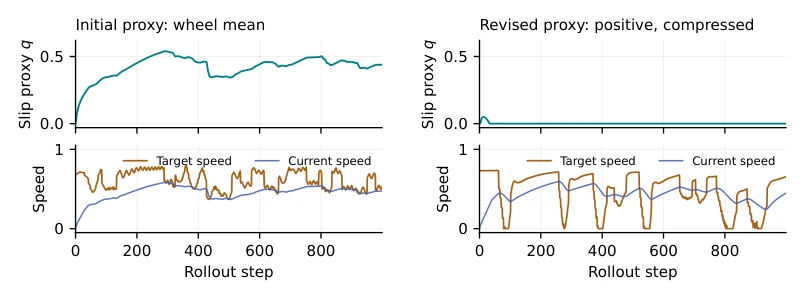
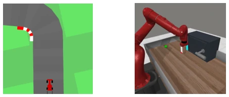

This approach equips the LLM with a unit testing framework specifically targeting various 'structural hallucinations'. The authors treat the policy as code for debugging, identifying issues via semantic rollout analysis, which is quite innovative. However, one should not celebrate too early; while effective in low-dimensional simulations, it may not withstand complex physical environments. Furthermore, relying on the LLM to generate analysis code raises the question: what if the LLM itself hallucinates again? Nevertheless, compared to pure black-box approaches, this structure offers significantly stronger interpretability, at least revealing which logic component is flawed. Experiments demonstrate a 15% improvement over zero-shot structure and a 75% reduction in RL resets on racing and door-opening tasks, indicating high efficiency. However, the limitations are evident: only low-dimensional tasks were tested, raising the question of whether this 'semantic table' can scale under high-dimensional perception.
Existing structured policy generation methods either rely on extensive manual input or depend on LLM static knowledge, often leading to inconsistencies with expert demonstrations [31]. For instance, an LLM might introduce a damping term, whereas in demonstrations, the expert steers in the same direction during sharp turns, resulting in policy oscillation. Black-box models are unpredictable, and since LLMs cannot directly observe the environment, the generated structures may contain assumptions conflicting with the demonstrations. While existing work such as MLES [9] can evolve programs, it incurs enormous computational costs. We require a closed-loop mechanism that enables the LLM to automatically correct the structure based on actual rollout feedback, rather than relying on human oversight.
The overall workflow is a closed loop of 'Generate-Fit-Analyze-Correct'. First, the LLM generates an initial structured policy [31] based on the task description, followed by parameter fitting via imitation learning. The core innovation is 'Semantic Rollout Analysis': during policy execution, all semantic latent variables (e.g., lateral_offset) are recorded to form tabular data. The LLM generates Python analysis code based on the structure (similar to unit tests), which runs on the table to detect if behavior matches expectations (e.g., 'does it correct when off-track'). If detection fails, the LLM modifies the code structure (e.g., adding an off-track branch) based on the results, rather than merely tuning parameters. Finally, after structure alignment, RL can be employed for further optimization. This approach leverages tabular data to circumvent LLM context limitations, and since the analysis code returns only results without exposing raw trajectories, it protects privacy and remains efficient.

Figure 1: Overview of policy refinement. 1. Generate the initial structure by querying an LLM with the task description. 2. Update parameters through imitation learning on the demonstrations. 3. Generate analysis code based on the desired behavior of the policy and its structure topology. 4. Collect tabular trajectories, recording observations, actions, and named latent values during policy rollouts. 5. Execute analyses and revise the structure based on the analysis results. The updated program returns to parameter fitting and another refinement cycle. 6. Reinforcement learning after the structure aligns with the demonstrations to go beyond the demonstration performance.

Figure 2: A sample speed-control subgraph and its corresponding PyTorch implementation. Solid nodes distinguish observations (gray), semantic latents (blue), action outputs (green), and trainable weights (orange); dashed nodes denote operation nodes (some collapsed due to space constraints). The returned speed_error exposes the latent value for further rollout analysis.

Figure 3: Example of off-track recovery structure refinement. (a) The steering structure before refinement (other nodes omitted); (b) The refined structure adds stronger steering when the race car is off-track; (c) The desired behavior of re-centering, corresponding test, and the result; (d) Recorded lateral offset and steering.
实验Experiments
在 Car Racing 和 Door Opening 任务上测试。基线包括 MLP、Zero-shot Structure 和 MLES [9]。结果表 1 显示，Refined Structure + IL 比 Zero-shot 提升 15% 回报，且 RL 重置次数减少 75%。MLES 要达到类似性能需要 2000+ 次查询，而本方法仅需 9 次。消融实验（图 4）表明，基于分析代码的反馈比直接喂表格给 LLM 更稳定，后者容易因上下文过长导致性能崩塌。这说明语义分析提供了更有效的信号，让结构修正更精准。
Evaluated on Car Racing and Door Opening tasks. Baselines include MLP, Zero-shot Structure, and MLES [9]. Table 1 results show that Refined Structure + IL achieves a 15% improvement in return over Zero-shot, with RL reset counts reduced by 75%. MLES requires 2000+ queries to achieve comparable performance, whereas this method needs only 9. Ablation studies (Fig. 4) demonstrate that feedback based on analysis code is more stable than feeding the table directly to the LLM, as the latter is prone to performance collapse due to excessively long context. This indicates that semantic analysis provides a more effective signal, enabling more precise structure correction.

Figure 5: Door Opening progresses through three revisions. The numbers below show the mean and std of distance from handle to target across 10 seeds; lower is better.

Figure 4: Execution feedback improves policy re- finement in Car Racing. Generated analysis avoids the large intermediate drop under direct table feed- back. Shading shows standard deviations.

Figure 6: Recorded slip and target-speed values before refinement (left) and after three revisions (right), with shared axis limits.

Figure 7: Car Racing and Door Opening: continuous control from semantic observations.